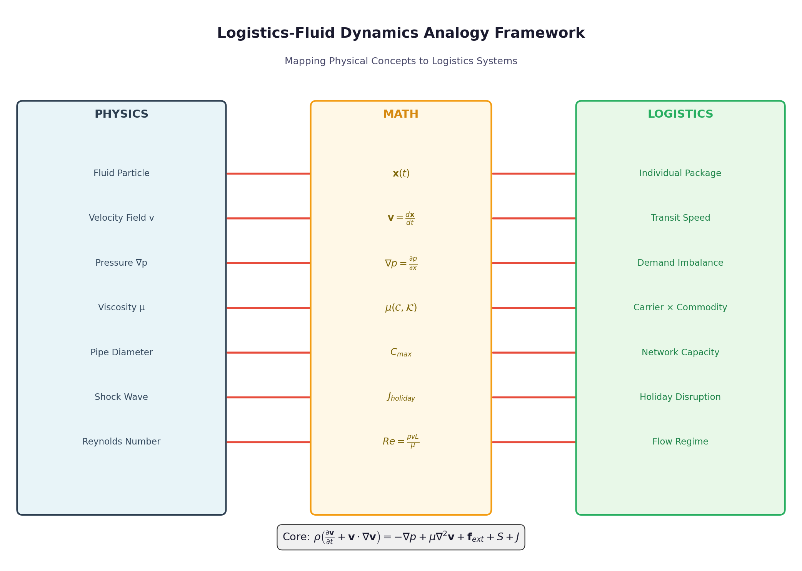
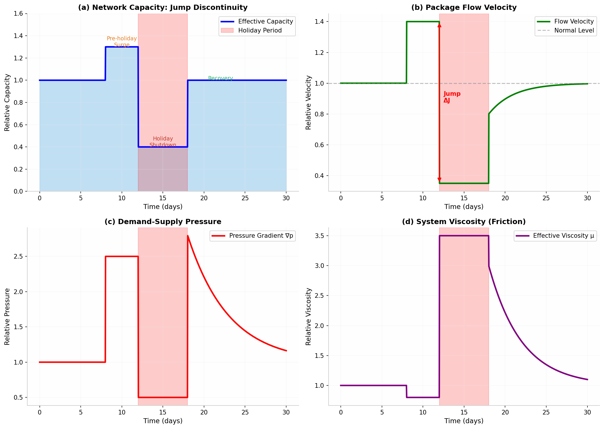
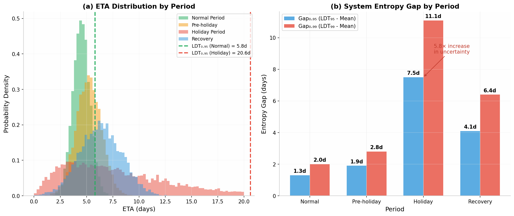
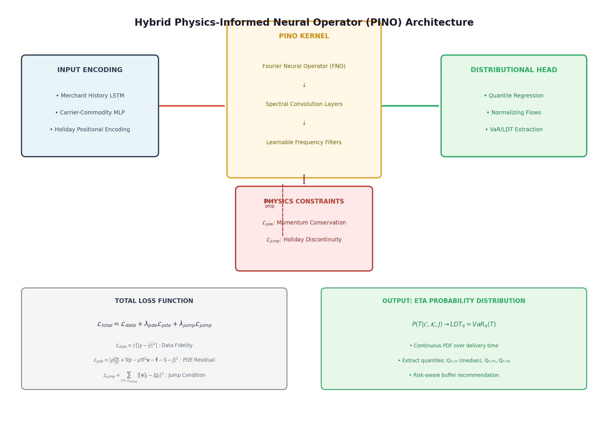
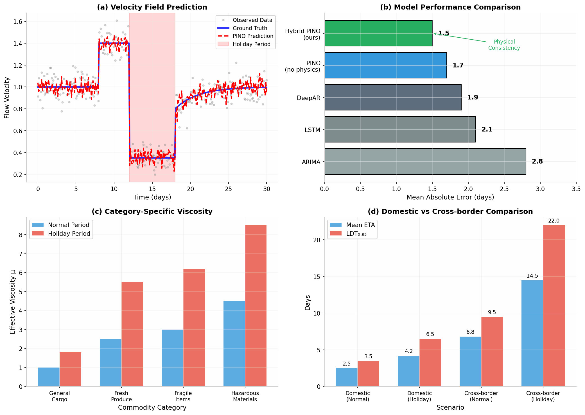

We present a physics-informed framework for global logistics Estimated Time of Arrival (ETA) prediction by reformulating package flow dynamics through a non-homogeneous Navier-Stokes equation with jump discontinuities. Unlike traditional statistical or pure machine learning approaches, our model captures the physical essence of logistics networks: packages as fluid particles, transportation infrastructure as variable-diameter pipelines, and operational disruptions (holidays, customs delays) as shock waves in the flow field.
The key innovation lies in threefold: (1) A service-category dependent viscosity operator μ(𝒞, 𝒦) that encodes carrier quality and commodity sensitivity into fluid rheology; (2) A holiday jump term Jholiday modeled as temporal discontinuities causing phase transitions from laminar to turbulent flow; (3) A Value-at-Risk (VaR) derived Latest Delivery Time (LDT) that quantifies tail risk in ETA distributions through the lens of systemic entropy increase.
Global logistics networks represent one of humanity's most complex organized systems. Annually, over 100 billion packages traverse multimodal infrastructure spanning air, sea, rail, and road networks. Yet, the dominant paradigm for ETA prediction remains either statistical regression (ARIMA, Prophet) that captures historical patterns but fails during unprecedented disruptions, or black-box deep learning (LSTMs, Transformers) that learns correlations without understanding causal physical constraints.
The analogy between package flow and fluid dynamics is mathematically rigorous when properly formulated. We map:
| Physical Concept | Logistics Mapping | Mathematical Representation |
|---|---|---|
| Fluid particle | Individual package | Mass point with trajectory x(t) |
| Velocity field v | Package transit speed | v = dx/dt |
| Pressure gradient ∇p | Demand-supply imbalance | p = p₀ + α(D-C)/Cmax |
| Viscosity μ | Network friction | μ(𝒞, 𝒦) = carrier × commodity |
| Shock wave | Holiday disruption | Jump discontinuity Jholiday |

By reformulating package flow dynamics through a non-homogeneous Navier-Stokes equation with jump discontinuities, our model captures the physical constraints that govern real logistics networks. This approach provides:
We describe package flow dynamics through the following modified N-S equation:
where each term carries specific physical meaning:
Traditional N-S assumes constant viscosity. In logistics, "friction" varies dramatically by service provider and commodity type:
| Commodity Type | Rheological Model | Viscosity Characteristics |
|---|---|---|
| General cargo | Newtonian | Constant μ, predictable flow |
| Fresh/Perishable | Shear-thinning | μ decreases with flow rate (priority handling) |
| Fragile/High-value | Bingham plastic | Yield stress required (special handling) |
| Hazardous | Shear-thickening | μ increases under stress (regulatory friction) |
The most innovative aspect of our framework is the treatment of holidays as temporal discontinuities satisfying Rankine-Hugoniot conditions:

Due to stochastic merchant behavior, weather, and holiday jumps, ETA is not a point estimate but a probability distribution P(T | 𝒞, 𝒦, J).
The entropy gap Gapα = LDTα - E[T] measures systemic uncertainty. During high-viscosity (cross-border) or strong-jump (holiday) periods:

We propose a Hybrid PINO (Physics-Informed Neural Operator) architecture that enforces physical constraints while learning from empirical data.

Route: Guangzhou (CN) → Los Angeles (US) via Hong Kong hub
Commodity: Fresh durian (high perishability, temperature-controlled)
Period: January 15 - February 15 (Spring Festival)
| Period | Mean ETA | LDT0.95 | Gap0.95 | Risk Expansion |
|---|---|---|---|---|
| Normal | 4.5 days | 5.8 days | 1.3 days | 1.0× (baseline) |
| Pre-holiday | 5.2 days | 7.1 days | 1.9 days | 1.5× |
| Holiday | 8.7 days | 16.2 days | 7.5 days | 5.8× |
| Recovery | 6.3 days | 10.4 days | 4.1 days | 3.2× |

The framework is implemented in Python with PyTorch for the neural operator components.
logistics_ns_solver.py — Core N-S equation solverlogistics_ns_solver_v2.py — Non-dimensionalized versionthree_stage_model.py — Three-stage decompositionpino_model.py — Physics-Informed Neural Operatorvisualization.py — Plotting toolsmanuscript_v3.md — Full paper (latest version)README.md — Project documentationrequirements.txt — Python dependenciesBy reformulating package flow dynamics through a non-homogeneous Navier-Stokes equation with jump discontinuities, our model captures the physical constraints that govern real logistics networks. The key innovations—service-category dependent viscosity, Rankine-Hugoniot holiday jumps, and VaR-derived Latest Delivery Time—provide a rigorous foundation for risk-aware ETA prediction.
The VaR-ETA gap expansion (5.8× during holidays) directly quantifies systemic resilience costs, enabling proactive risk mitigation. As global supply chains face increasing volatility, physics-informed approaches offer a robust foundation for resilient logistics.